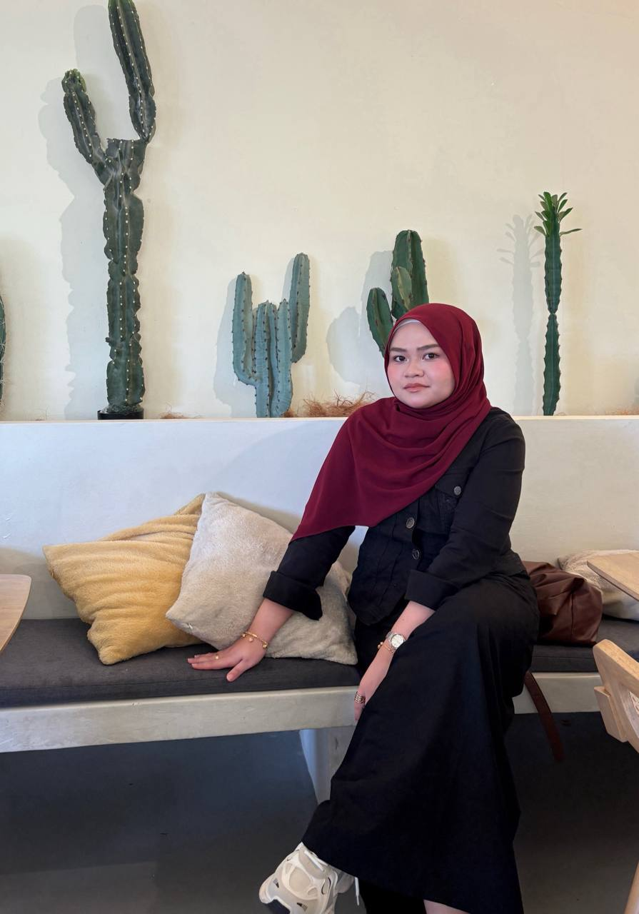

Projects
Technologies
Years Learning
I am a Bachelor of Computer Science (Software Development) with Honours student at UniSZA, passionate about software development, web technologies, and problem-solving. I enjoy building responsive web applications and continuously expanding my technical skills to create impactful digital solutions.
Developed fundamental knowledge in programming, database management, networking, and information systems development.
Currently pursuing advanced studies in software engineering, web application development, database systems, and modern software technologies at UniSZA.
To become a Full Stack Developer capable of designing, developing and deploying scalable applications that create value for users and businesses.